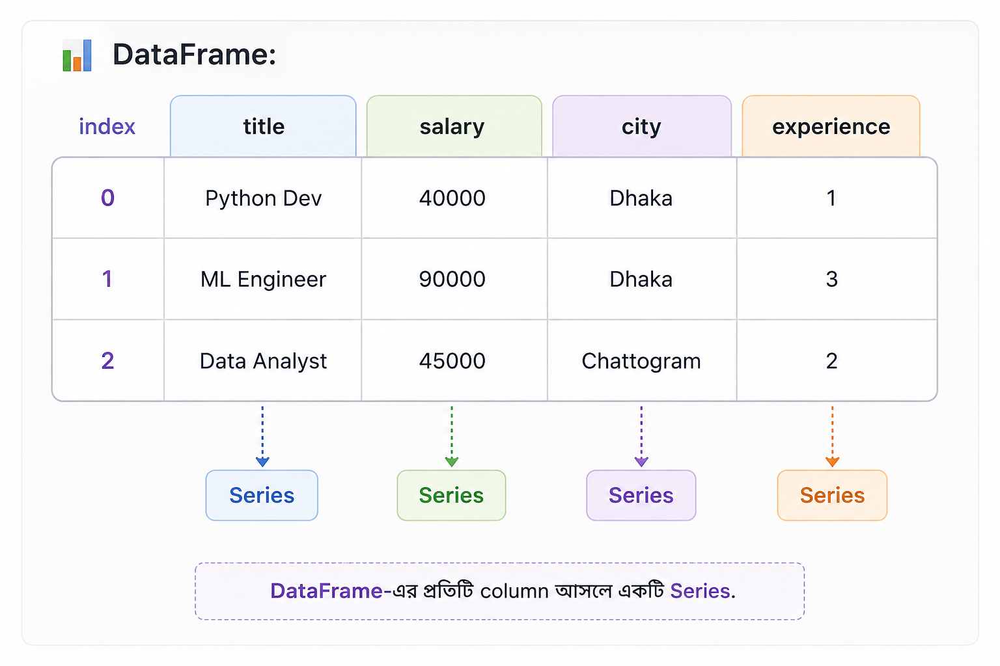

Pandas Part 1: DataFrame, filtering, selection — data-র Excel-on-steroids
real dataset load ও slice করা (Series 03, Episode 03)
📑 এই পর্বে যা যা আছে
- ১. গল্প: Rahim প্রথমবার real data খুলল
- ২. সমস্যা: NumPy array-তে column-এর নাম নেই
- ৩. Pandas কী এবং কেন দরকার
- ৪. তিন Level-এ DataFrame বোঝা
- ৫. Series বনাম DataFrame
- ৬. Data load করা (CSV, JSON)
- ৭. প্রথম নজর: data-কে চেনা
- ৮. Column ও row বেছে নেওয়া: loc বনাম iloc
- ৯. Filtering: শর্ত দিয়ে row বাছাই
- ১০. নতুন column তৈরি
- ১১. বাস্তব উদাহরণ: job dataset নিয়ে প্রশ্ন
- ১২. একজন AI Engineer-এর দৃষ্টিতে Pandas
- ১৩. Boss Question
- ১৪. Job Requirement Decoder
- ১৫. সাধারণ ভুল ধারণা
- ১৬. Interview Prep
- ১৭. হাতে-কলমে (Mini Exercise)
- ১৮. Project Connection
- ১৯. সারসংক্ষেপ
- ২০. পরবর্তী পর্বে কী শিখব
🧩 ১. গল্প: Rahim প্রথমবার Real-World Data-র সামনে
Rahim এতদিন NumPy দিয়ে array নিয়ে কাজ করেছে। সংখ্যা, matrix, calculation — সবকিছুই বেশ
গোছানো মনে হচ্ছিল। কিন্তু একদিন Nila তাকে বাংলাদেশের কিছু tech job-এর real-world data দিয়ে
একটা jobs.csv file দিল।
Rahim file-টা খুলে দেখল — একসাথে কত ধরনের information! কোথাও job-এর title, কোথাও salary, কোথাও city, আবার কোথাও কত বছরের experience দরকার তার তথ্য।
Nila: "একদম ঠিক ধরেছ। NumPy মূলত numerical computing-এর জন্য দুর্দান্ত। কিন্তু real-world data শুধু সংখ্যা দিয়ে তৈরি হয় না। সেখানে column-এর নাম থাকে, text থাকে, missing value থাকে, বিভিন্ন ধরনের data থাকে। এই জায়গাতেই Pandas তোমার কাজ অনেক সহজ করে দেয়।"
Rahim: "মানে Excel-এর মতো?"
Nila: "হ্যাঁ, conceptually Excel-এর মতো table ভাবতে পারো। তবে Pandas-এর আসল শক্তি হলো — তুমি এই পুরো data-কে Python code দিয়ে automate, clean, filter, transform এবং analyze করতে পারবে। হাজার বা লাখ লাখ row হলেও!"
Rahim বুঝতে পারল — NumPy দিয়ে calculation শেখা গুরুত্বপূর্ণ, কিন্তু real-world data নিয়ে কাজ করতে হলে তাকে Pandas-ও শিখতে হবে।
❓ ২. NumPy দিয়ে Tabular Data সামলাতে সমস্যা কোথায়?
NumPy array numerical data নিয়ে অসাধারণ কাজ করে। কিন্তু যখন data দেখতে Excel বা database table-এর মতো হয়, তখন কিছু practical সমস্যা সামনে আসে।
-
Column-এর নাম নেই:
data[:, 2]দেখলে বোঝা কঠিন — এটা কি salary, city নাকি experience? - Data type-এর সীমাবদ্ধতা: একই table-এ title-এর মতো text এবং salary-এর মতো numerical value থাকতে পারে।
- Missing value: কোনো employee-এর salary না থাকলে বা কোনো job-এর experience information missing হলে সেটি পরিষ্কারভাবে handle করা দরকার।
- Real-world প্রশ্ন: "যেসব job-এর salary 50,000-এর বেশি, শুধু তাদের city এবং title দেখাও" — এমন কাজ DataFrame-এর তুলনায় raw NumPy array-তে অনেক কম readable।
Pandas-এর মূল সুবিধা এখানেই। এটি table-কে শুধু data হিসেবে দেখে না; বরং column-এর নাম, row-এর index, বিভিন্ন data type এবং missing value— সবকিছুকে একসাথে manage করার সুবিধা দেয়।
📚 ৩. Pandas কী এবং কেন এত গুরুত্বপূর্ণ?
Pandas হলো Python-এর একটি powerful data analysis এবং data manipulation library। Data load করা, পরিষ্কার করা, filter করা, নতুন column তৈরি করা, group করে analysis করা — এই ধরনের কাজের জন্য Pandas ব্যাপকভাবে ব্যবহৃত হয়।
Pandas-এর দুটি fundamental data structure হলো:
- Series: একটি labeled column-এর মতো।
- DataFrame: একাধিক labeled column নিয়ে তৈরি সম্পূর্ণ table-এর মতো।
সহজভাবে মনে রাখতে পারো:
DataFrame = অনেকগুলো column নিয়ে একটি complete table
Pandas নিজে শূন্য থেকে numerical computing engine তৈরি করেনি। বরং এর নিচের স্তরে NumPy-এর শক্তিকে কাজে লাগিয়ে তার ওপর আরও একটি convenient table-oriented interface তৈরি করেছে। তাই NumPy এবং Pandas একে অপরের competitor নয় — বরং data science workflow-এ তারা একে অপরকে complement করে।
Real-world data প্রায়ই CSV, Excel, SQL database বা API response থেকে আসে। এই data-কে model-এ দেওয়ার আগে সাধারণত load, inspect, clean এবং transform করতে হয়। এই workflow-এ Pandas-এর ব্যবহার অত্যন্ত common — বিশেষ করে Data Analysis এবং traditional Machine Learning ecosystem-এ।
🪜 ৪. DataFrame — তিনটি Level-এ বোঝা যাক
Level 1 — একদম সহজভাবে
DataFrame-কে প্রথমে একটি Excel বা Google Sheets-এর table হিসেবে ভাবো। উপরে column-এর নাম, বাঁ পাশে row-এর index, আর মাঝখানে actual data।
তবে Excel-এর মতো mouse দিয়ে cell ধরে ধরে কাজ না করে এখানে তুমি Python code দিয়ে পুরো table-এর ওপর operation চালাতে পারবে।
অর্থাৎ, আজ ১০০টি row-এর ওপর যে কাজ করলে, আগামীকাল ১০ লাখ row-এর ওপর একই কাজ automatically চালানো সম্ভব।
Level 2 — Technicalভাবে
একটি DataFrame-কে একাধিক Series-এর collection হিসেবে ভাবা যায়। প্রতিটি column একটি Series এবং সাধারণত সব column একটি common index share করে।
যেমন:
df["salary"] লিখলে তুমি পুরো salary column-টিকে একটি Series হিসেবে পাচ্ছ।
এরপর df["salary"].mean() দিয়ে সেই column-এর average salary বের করতে পারো।
Level 3 — Engineer-এর দৃষ্টিতে
একজন engineer DataFrame-কে শুধু একটা table হিসেবে দেখেন না। Data pipeline-এর মাঝখানের একটি গুরুত্বপূর্ণ representation হিসেবে দেখেন।
নতুন কোনো dataset হাতে পেলে একজন engineer সাধারণত প্রথমেই data-র structure বোঝার চেষ্টা করেন।
এজন্য df.head(), df.info(), df.describe()-এর মতো
operation খুবই গুরুত্বপূর্ণ।
🧱 ৫. Series বনাম DataFrame
Pandas শেখার শুরুতেই এই দুটি concept পরিষ্কার হওয়া জরুরি। কারণ DataFrame-এর প্রতিটি column মূলত একটি Series হিসেবে কাজ করে।

অর্থাৎ পুরো DataFrame হলো একটি complete table, আর এর প্রতিটি column আলাদাভাবে একটি Series হিসেবে access করা যায়।
📥 ৬. Real Data Pandas-এ Load করা
এখন ধরো Rahim-এর হাতে বিভিন্ন source থেকে data আসছে। কখনো CSV, কখনো JSON, কখনো Excel। Pandas এই common data source-গুলো থেকে সরাসরি DataFrame তৈরি করতে পারে।
👀 ৭. নতুন Dataset পেলে প্রথমে কী করবে?
Imagine করো, তুমি একজন junior Data Scientist বা ML Engineer এবং আজ সকালে তোমার manager তোমাকে একটি নতুন dataset দিলেন। তুমি কিন্তু সঙ্গে সঙ্গে model train করতে বসবে না।
প্রথম কাজ হলো — data-টাকে চিনে নেওয়া।
এজন্য কিছু basic Pandas operation প্রায় প্রতিদিনই কাজে লাগে:
নতুন dataset হাতে পেলেই আগে
head(), shape, info(),
describe() চালিয়ে data-এর structure বোঝার চেষ্টা করো।
উদাহরণস্বরূপ, যদি salary column-এর maximum value হঠাৎ ৪০ লাখ টাকা দেখা যায়, তাহলে সেটা সত্যিই কোনো executive salary হতে পারে — অথবা data entry error-ও হতে পারে। Data বোঝার এই ধাপটিই পরবর্তী cleaning এবং modeling-এর ভিত্তি তৈরি করে।
🎯 ৮. Column ও Row বেছে নেওয়া: loc বনাম iloc
DataFrame-এর data access করার সময় loc এবং iloc খুব গুরুত্বপূর্ণ।
নাম দুটো কাছাকাছি হওয়ায় beginner-দের মধ্যে confusion হওয়াটা স্বাভাবিক।
loc → label দিয়ে খুঁজবে।iloc → integer position দিয়ে খুঁজবে।
আরেকটি গুরুত্বপূর্ণ পার্থক্য হলো slicing:
-
loc[0:2]→ label-based slicing, তাই 2-ও included। -
iloc[0:2]→ Python-style positional slicing, তাই 2 বাদ যাবে।
loc = label |
iloc = position
এই ছোট পার্থক্যটা শুরুতে confusing মনে হলেও কয়েকবার practice করলে খুব স্বাভাবিক হয়ে যাবে। Pandas-এর পরবর্তী filtering, grouping এবং data transformation শেখার জন্য এই foundation-টা পরিষ্কার থাকা অত্যন্ত গুরুত্বপূর্ণ।
🔍 ৯. Filtering: শর্ত দিয়ে row বাছাই
মনে আছে NumPy-র boolean indexing? Pandas ঠিক সেটাই ব্যবহার করে, কিন্তু আরও পঠনযোগ্য উপায়ে:
and/or নয়, বরং &/|
ব্যবহার করুন, আর প্রতিটা শর্তকে বন্ধনীতে () রাখুন। নাহলে error বা ভুল result পাবেন — এটা
junior-দের এক নম্বর ভুল।
➕ ১০. নতুন column তৈরি
লক্ষ করুন — df["salary"] * 1.10 পুরো column-এ একসাথে হিসাব করছে (vectorized, NumPy-র মতো)।
এটাই Pandas-এর শক্তি: Excel-এর সুবিধা + NumPy-র গতি।
🇧🇩 ১১. বাস্তব উদাহরণ: job dataset নিয়ে প্রশ্ন
দেখুন — মাত্র কয়েক লাইনে আমরা data থেকে বাস্তব প্রশ্নের উত্তর বের করলাম। এটাই EDA (Exploratory Data Analysis)-এর শুরু — data-কে প্রশ্ন করা।
🔍 ১২. একজন AI Engineer-এর দৃষ্টিতে Pandas
- প্রথমে চেনা: নতুন data পেলে
head(),info(),describe()— সবসময়। - Chaining সাবধানে: filter করে নতuন DataFrame বানানোর সময়
.copy()ব্যবহার করে "SettingWithCopyWarning" এড়ানো। - Vectorized ভাবনা:
applyদিয়ে row-loop-এর বদলে সম্ভব হলে vectorized operation (দ্রুত)। - Reproducible: data cleaning-এর প্রতিটা ধাপ notebook/script-এ লেখা, যাতে অন্যরা একই ফল পায়।
💼 ১৩. Boss Question
উত্তর: Excel ছোট, একবারের কাজে ভালো। কিন্তু (১) আমাদের data লাখ লাখ row — Excel hang করবে; (২) প্রতি সপ্তাহে নতুন data এলে Excel-এ হাতে আবার করতে হবে, Pandas-এ একই script আবার চালালেই হবে (automation); (৩) Excel-এ ভুল হলে ধরা কঠিন, code review করা যায়; (৪) এই data-ই পরে ML model-এ যাবে — Excel থেকে সেটা করা যায় না। মানে দ্রুত, নির্ভুল, বারবার চালানো যায় এমন কাজ — এটাই business value।
🔎 ১৪. Job Requirement Decoder
| প্রশ্ন | উত্তর |
|---|---|
| এর মানে কী? | আপনি DataFrame load, explore, filter, select ও transform করতে পারেন। |
| কোম্পানি কেন চায়? | প্রায় সব structured data Pandas দিয়েই বিশ্লেষণ ও ML-এর জন্য প্রস্তুত করা হয়। |
| কোন সমস্যা সমাধান করে? | বড় data-তে দ্রুত, automate-যোগ্য, নির্ভুল বিশ্লেষণ — Excel-এর সীমাবদ্ধতা এড়ায়। |
| Junior-এর কী জানা লাগে? | load, head/info/describe, loc/iloc, filtering, নতুন column, value_counts — মূল কাজগুলো। |
| এখনই কী master লাগে না? | MultiIndex, উন্নত pivot, performance tuning, বড় out-of-memory data — পরে। |
| GitHub-এ কীভাবে দেখাবেন? | একটা real dataset নিয়ে EDA notebook — প্রশ্ন → Pandas code → উত্তর। |
| Interview-তে কী জিজ্ঞেস করতে পারে? | "loc vs iloc?", "একাধিক শর্তে filter কীভাবে?", "নতুন column কীভাবে বানাও?" |
⚠️ ১৫. সাধারণ ভুল ধারণা
and/or ব্যবহার। →
ঠিক: Pandas-এ &/|, প্রতিটা শর্ত ()-তে।ভুল ২:
loc আর iloc এক ভাবা। →
ঠিক: loc = label (শেষ সীমা অন্তর্ভুক্ত); iloc = position (শেষ সীমা বাদ)।ভুল ৩:
df["a", "b"] দিয়ে multiple column চাওয়া। →
ঠিক: দুটো bracket লাগে: df[["a", "b"]]।ভুল ৪: filter করা DataFrame-এ সরাসরি value বসিয়ে original বদলানোর চেষ্টা। → ঠিক: নতুন DataFrame হলে
.copy() নিন; original বদলাতে .loc[শর্ত, "col"] = value।ভুল ৫: সব কাজে
apply/loop। →
ঠিক: সম্ভব হলে vectorized operation বা np.where — দ্রুত।
🎤 ১৬. Interview Prep
loc আর iloc-এর পার্থক্য?উত্তর: loc label দিয়ে বাছে (slice-এ শেষ সীমা অন্তর্ভুক্ত); iloc integer position দিয়ে (শেষ সীমা বাদ)।
প্রশ্ন ২: Series আর DataFrame-এর পার্থক্য?
উত্তর: Series একটা labeled 1D column; DataFrame হলো common index-এর অধীনে একাধিক Series-এর 2D table।
প্রশ্ন ৩: নতুন dataset পেলে প্রথমে কী চালাও?
উত্তর:
head(), shape, info(), describe(), আর কিছু column-এ value_counts()।প্রশ্ন ৪: একাধিক শর্তে filter কীভাবে?
উত্তর:
df[(cond1) & (cond2)] — প্রতিটা শর্ত বন্ধনীতে, &/| দিয়ে যুক্ত।
✍️ ১৭. হাতে-কলমে (Mini Exercise)
১.
df.info() ও df.describe() চালিয়ে দেখুন কী বলে।২. শুধু
title ও salary column দেখান।৩. Dhaka-র বাইরের সব job filter করুন।
৪. salary 12 দিয়ে গুণ করে একটা
yearly column বানান।৫.
city-তে value_counts() চালিয়ে দেখুন কোন শহরে সবচেয়ে বেশি job।বোনাস:
df.sort_values("salary", ascending=False) দিয়ে salary অনুযায়ী সাজান।
🚀 ১৮. Project Connection
flagship V2 (Data Analyzer)-এর প্রথম বাস্তব ধাপ এটাই — আমরা bangladesh job market data
একটা DataFrame-এ load করব, info()/describe() দিয়ে চিনব, তারপর filtering দিয়ে
প্রাথমিক প্রশ্নের উত্তর বের করব ("Dhaka-তে কত job?", "কোন role-এ salary বেশি?")।
📌 ১৯. সারসংক্ষেপ
✓ Pandas — NumPy-র উপর তৈরি, কিন্তু label + mixed type + missing value সামলায়
✓ Series (labeled column) বনাম DataFrame (নাম-সহ table)
✓ data load:
read_csv/read_json; বাংলা লেখায় encoding="utf-8"✓ প্রথম নজর:
head, info, describe, value_counts✓ loc (label) বনাম iloc (position) — junior-দের বড় বিভ্রান্তি
✓ filtering (
&/|, বন্ধনী) ও নতুন column তৈরি (vectorized)
➡️ ২০. পরবর্তী পর্বে কী শিখব
Data দেখা ও filter করা শিখলাম, এবার আসল wrangling —
groupby দিয়ে "প্রতি শহরে গড় salary কত"
বের করা, merge দিয়ে দুটো table জোড়া, আর real data-র বড় মাথাব্যথা — missing value ও
duplicate — কীভাবে সামলাতে হয়, পরের পর্বে সেটাই শিখব।
📖 ডকুমেন্ট তথ্য
সংস্করণ: ১.০ • ভাষা: বাংলা
সিরিজ: AI/ML Engineer বাংলা সিরিজ — Zero to Job-Ready (Series 03, Episode 03)
লেখক: Sheikh Thanbir Alam
👁️ পাতাটি দেখা হয়েছে: